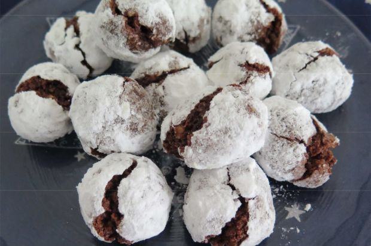

Schoggikugeln
Diese Schoggikugeln werden bei Maya Frei zu Weihnachten aufgetischt.
© Annemarie Wildeisens KOCHEN – https://www.wildeisen.ch/
Vegetarisch
Zutaten
- 6 Eier
- 500 g Mandeln gemahlen
- 400 g Zucker
- 400 g Zartbitterschokolade z.B. Cremant
- 1 Teelöffel Zimt
- 4 gehäufte Esslöffel Mehl
- Puderzucker
- wenig Pflümli
Zubereitung
- Eigelb und Zucker schaumig rühren.
- Gemahlene Mandeln, geriebene oder aufgelöste Schokolade, Zimt, Pflümli, Mehl und Eierschnee vorsichtig daruntermischen.
- Diesen relativ weichen Teig für ca. 4 Stunden in den Tiefkühler stellen.
- Möglichst kleine Kugeln formen und in Puderzucker wenden, auf ein mit Papier belegtes Blech legen und über Nacht stehen lassen.
- Bei 180 Grad backen, bis sie Risse zeigen.
